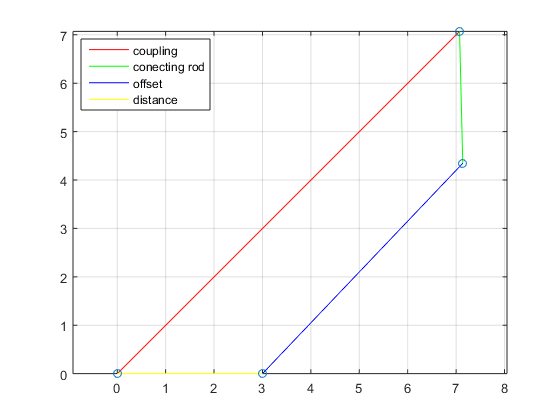

Contents
HW 6 #2, Walter Coe, 2-17-16
clear; clc;
Table P6-3 row c, pg. 330
angles = [0 45 45 00];
lengths = [3 10 5 6];
gamma = 45;
omega2 = rad2deg(24);
options = 1;
Solve
[angles, angularRates, lengths, linearRates, points, p] = inverted_four_bar_crank_slider(angles, omega2, lengths, gamma, [0 0], options);
Equation solved.
fsolve completed because the vector of function values is near zero
as measured by the default value of the function tolerance, and
the problem appears regular as measured by the gradient.

Report
disp(['omega3 is: ', num2str(angularRates(3)), ' degrees per second']);
disp(['omega4 is: ', num2str(angularRates(4)), ' degrees per second']);
disp(['Va is: ', num2str(linearRates(2,:)), ' cm per second in x and y respectively']);
disp(['Vb_34 is: ', num2str(linearRates(3,:)-linearRates(2,:)), ' cm per second in x and y respectively']);
disp(['Vb4 is: ', num2str(linearRates(3,:)), ' cm per second in x and y respectively']);
omega3 is: 1360.6348 degrees per second
omega4 is: 1360.6348 degrees per second
Va is: -9723.4162 9723.4162 cm per second in x and y respectively
Vb_34 is: 3811.394 -4093.5165 cm per second in x and y respectively
Vb4 is: -5912.0222 5629.8997 cm per second in x and y respectively